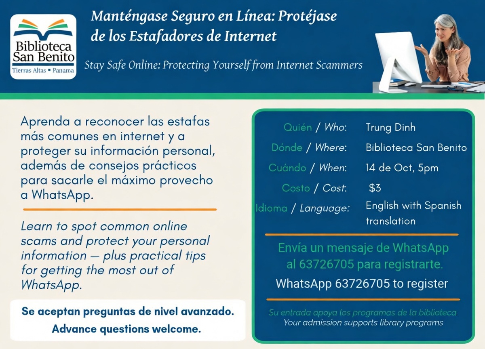

Habilidades tecnológicas, cómo protegerse de estafadores astutos, y lo básico de WhatsApp con Trung Dinh
Trung responderá preguntas sobre todo lo relacionado con la tecnología informática (siéntase libre de enviar sus preguntas), cómo mantenerse alerta ante los estafadores, y cómo sacarle el máximo provecho a WhatsApp.